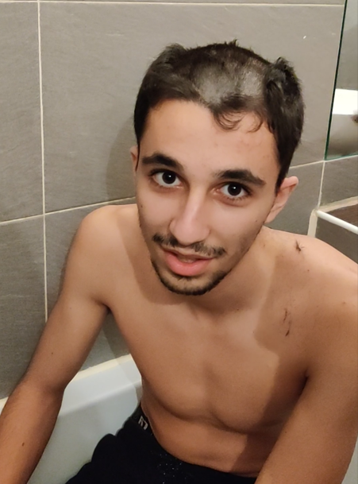
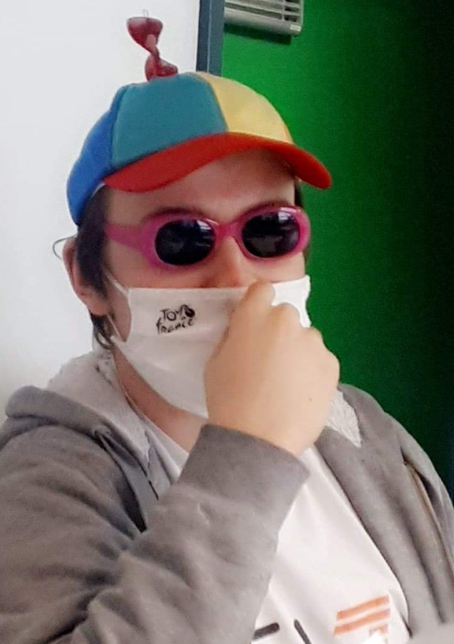
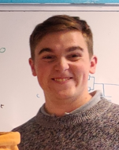

Membre du projet Bifrost

Corentin Tyteca
Elève ingénieur à l’Institut Supérieur de l’Electronique et du Numérique à Toulon option cybersécurité.
21 ans
Passion : sport (volley,musculation), jeux vidéos

Thomas Choquel
Elève ingénieur à l’Institut Supérieur de l’Electronique et du Numérique à Toulon option cybersécurité.
21 ans
Passion :sport (judo,foot),jeux vidéos

Loic Allegretti
Elève ingénieur à l’Institut Supérieur de l’Electronique et du Numérique à Toulon option cybersécurité.
21 ans
Passion : sport (vtt,triathlon), jeux vidéos

Quentin Bender
Elève ingénieur à l’Institut Supérieur de l’Electronique et du Numérique à Toulon option cybersécurité.
21 ans
Passion : sport, cuisine, jeux vidéos

Hugo Gouiran
Elève ingénieur à l’Institut Supérieur de l’Electronique et du Numérique à Toulon option cybersécurité.
21 ans
Passion : peinture, jeux vidéos